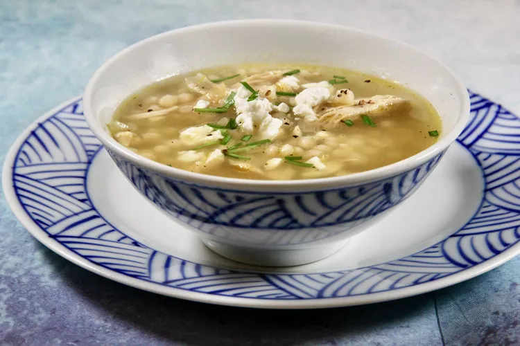

Chicken Soup

WOW! Greek chicekn soup. Good for the soul, makes you warm, what more can you want?! Below are the ingredients and the description
for how to make this beautifully crafted chicken soup. As George Bush says:
"Chicken soup is good for the soul!"
Ingredients List
<
- 3 tablespoons olive oil
- 1 sweet onion, quartered and slived into thin strips
- 8 cloves garlic, minced
- 10 cups chicken broth
- 2 skinless, boneless chicken breasts
- 1 lemon, zested
- 1/2 teaspoon red pepper flakes
- 1 cup Israeli (large pearl) couscous
- 1 teaspoon salt
- ground black pepper to taste
- 1/2 (4 ounce) package crumbled feta cheese
- 1/3 cup chopped fresh chives
Directions
- Place olive oil in a large sauce pot over medium-low heat.
Saute onion and garlic in the hot oil until softened,
3 to 4 minutes.
- Add chicken broth, chicken breasts, lemon zest, and red pepper flakes
to the pot. Increase heat to high, cover, and bring to a boil. Reduce
heat to medium and simmer for 5 minutes. Stir in pearl couscous, salt,
and pepper. Simmer for 5 minutes more. Remove from heat.
- Remove chicken breasts from the pot using tongs. Use a fork
and the tongs to shred the chicken. It's YUMMA!
Return to the pot. Stir feta cheese and chives into the soup. Taste
and season as needed. Serve warm.